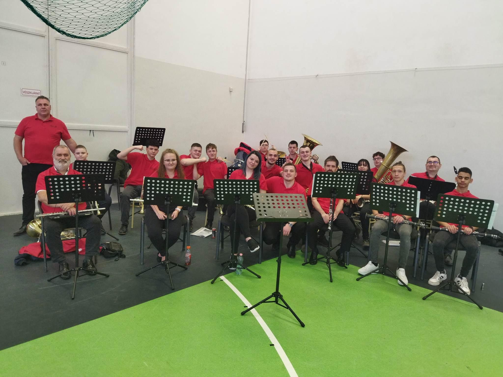

☰ Menü
Kezdőlap
Magamról
Hobby
Hollik Evelin vagyok, 19, és a zenélés a Hobbym
Áltralánosban szerettem meg az informatikát, és azóta örülök, hogy a tudásom tágul.
Nem tudom hogy mit írhatnék ide, ez már annyira nem fontos.
A párom és én
A családom
Zenekarom
